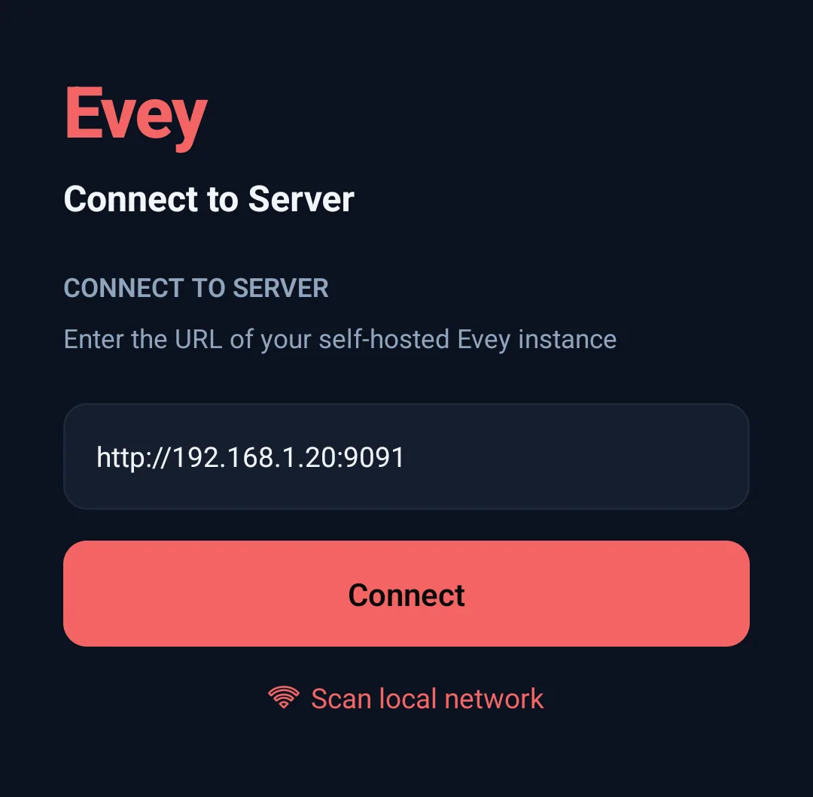
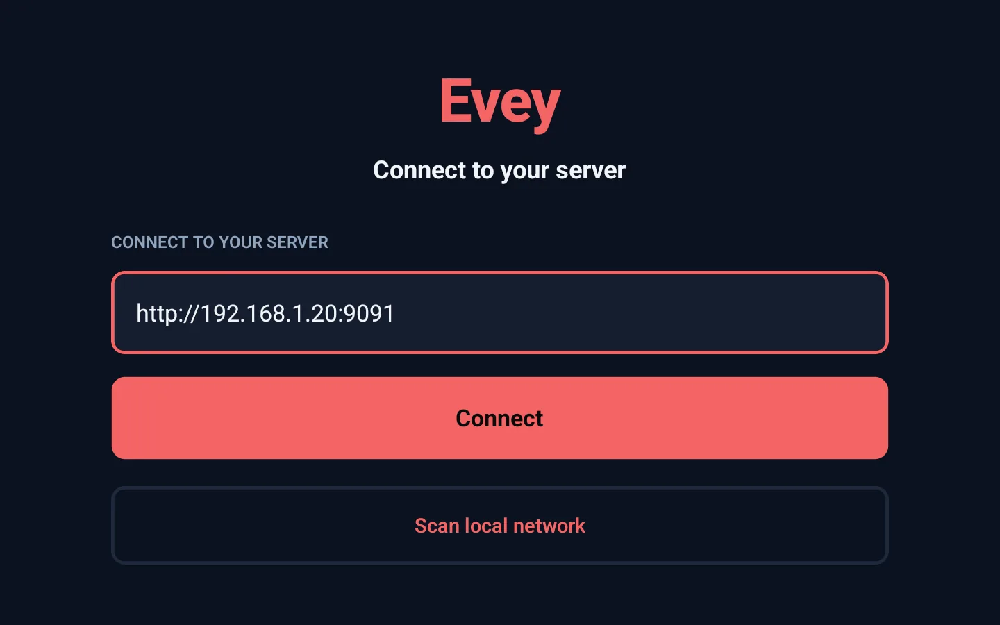

Conectar las aplicaciones¶
¿Tu teléfono o tu televisor te pide la dirección de tu servidor Evey? Esta página te dice qué escribir, y qué hacer cuando no funciona.
Cada app se conecta a tu propio servidor Evey, en casa. Escribes su dirección una vez, inicias sesión y eliges tu perfil. Dónde te quedaste, lo que has visto y tus favoritos se guardan en el servidor, así que te siguen de un dispositivo a otro.
- Navegador web: no hay nada que instalar. Abre la dirección del servidor. Ahí está también el panel de administración, para los administradores.
- Android (teléfono, tablet) y Android TV: las apps de Evey. Están en pruebas y todavía no están en Google Play para todo el mundo.
- Chromecast: sin app. Envías el vídeo desde el reproductor web en Chrome o desde la app de Android.
La dirección del servidor que hay que escribir¶
Pide la dirección a la persona que gestiona Evey. Tiene este aspecto:
Después, en la app de Android o de Android TV:
- La primera pantalla dice Conectar al servidor. Escribe la dirección en
el campo URL del servidor, tal cual te la dieron: con
http://al principio y:9091(u otro número) al final. - Pulsa Conectar.
- Inicia sesión con tu nombre de usuario y tu contraseña. En un televisor, puedes usar en su lugar la Conexión rápida.
- Elige tu perfil.


La dirección depende de dónde estés:
| Dónde estás | Qué escribir |
|---|---|
| En casa, en la misma Wi-Fi que el servidor | La dirección de casa, por ejemplo http://192.168.1.20:9091. También vale un nombre si tu router lo conoce, por ejemplo http://nas:9091. |
| Fuera de casa | La dirección pública, que empieza por https:// y normalmente no lleva puerto, por ejemplo https://evey.example.org. Solo existe si la persona que gestiona Evey la ha configurado. |
No escribas nada después del puerto: ni /api ni ninguna otra ruta. Si
pones una / al final, la app la quita por ti.
Para la persona que gestiona el servidor: de dónde sale la dirección
- La IP es la del ordenador o el NAS donde funciona Evey, en la red de
tu casa. La encontrarás en la lista de dispositivos de tu router, o en
esa misma máquina (
ip aen Linux,ipconfigen Windows,ifconfigen macOS). Nunca es la IP del propio teléfono. - El puerto es el número de la izquierda de la línea
ports:de tu archivo compose:9091con el archivo de la instalación. http://es lo normal en casa.https://es solo para la dirección pública, que se configura en Administración → Acceso remoto → URL externa: consulta Acceso remoto y HTTPS.
Mientras no haya ningún servidor guardado, la pantalla de conexión también explica lo que se pide (Evey funciona en un servidor que alguien configuró para ti. Escribe su dirección web, la misma que abrirías en un navegador.) y ofrece ¿Dónde encuentro la dirección de mi servidor?, que lleva a esta página. El teléfono la abre en el navegador; el televisor escribe en pantalla la dirección de la página, para que la abras en otro dispositivo.
Escanear la red local: qué encuentra y qué no¶
Escanear la red local, debajo del campo, busca por ti un servidor Evey en casa. Puede tardar hasta un par de minutos. Cada servidor encontrado aparece con su nombre, su dirección y su versión. Toca uno para rellenar el campo y pulsa Conectar. Si no encuentra nada, la pantalla dice No se encontró ningún servidor en esta red - introduce la dirección abajo: escribe tú la dirección.
La búsqueda no encuentra el servidor si el teléfono está con datos móviles, en una Wi-Fi de invitados o en otra red distinta de la del servidor.
Qué prueba exactamente la búsqueda
Prueba http:// en todas las direcciones de cuatro redes domésticas
habituales (192.168.1.x, 192.168.0.x, 10.0.0.x y 172.16.0.x,
equipos del 1 al 254), en los puertos 9091, 8096 y 8920, de
cincuenta en cincuenta, esperando 2 segundos cada vez. Por eso tampoco
encuentra un servidor que esté en otro rango de direcciones
(192.168.2.x, 10.1.x.x...), en otro puerto, o al que solo se llegue
por HTTPS. Las apps no usan mDNS ni Bonjour, y no leen el rango de red
del teléfono: estos cuatro rangos son fijos.
Cuando la conexión falla¶
Cada fallo abre un cuadro con el título Conexión fallida. Busca el mensaje en esta tabla (algunos mensajes de la app de Android todavía salen en inglés):
| Mensaje (Android) | Qué significa | Qué hacer |
|---|---|---|
| Empieza la dirección con http:// o https://. | A la dirección le falta http://. |
Escribe http:// delante de la dirección. |
| Esta conexión no está cifrada | Has escrito http:// para una dirección de fuera de casa. Tu contraseña y el vídeo irían por internet sin protección. |
Pulsa Cancelar y usa la dirección pública con https://. Conectar de todos modos está ahí por si sabes lo que haces. |
| No response from ... within 8s. | En esa dirección no responde nada. | Comprueba que el servidor está encendido, que la dirección y el puerto son correctos y que el teléfono está en la misma Wi-Fi. |
| Couldn't reach ... | Dirección o puerto equivocados, http y https confundidos, u otra red. |
Las mismas comprobaciones. En casa, prueba http:// en lugar de https://; con una dirección pública, al revés. |
| TLS/certificate problem reaching ... | No se acepta el certificado HTTPS del servidor. | En casa, usa http://. Para una dirección pública, el servidor necesita un certificado válido. |
| ... answered "HTTP 404 ..." instead of a healthy Evey server. | Algo responde, pero no es Evey: hay una ruta después del puerto, u otro programa usa ese puerto. | Quita todo lo que haya después del puerto y comprueba el número de puerto. |
| ... respondió, pero no es un servidor Evey. | Ha respondido otra página: la página de acceso de una Wi-Fi, la página de tu proveedor de internet u otro programa. | Comprueba la dirección. En una Wi-Fi pública, entra primero en su página de acceso. |
| Acceso remoto desactivado | Estás fuera de casa y el servidor no acepta conexiones desde fuera. | Pregunta a la persona que gestiona Evey. Lo activa en Administración → Acceso remoto: Acceso remoto y HTTPS. |
En Android TV los mensajes son más cortos: Server returned 404 cuando
responde algo que no es Evey, y el error de red tal cual cuando no responde
nada. Las causas y las comprobaciones son las mismas. El televisor también
necesita el http:// (un 192.168.1.20:9091 a secas falla), pero no avisa
cuando se usa http:// con una dirección pública.
Si el servidor no responde cuando abres la app más tarde, la app vuelve a esta pantalla y muestra el servidor guardado. En el televisor añade Tu servidor no respondió. Puede estar en reposo o fuera de la red. Cuando el servidor vuelva a estar encendido, elígelo de nuevo.
Cambiar de servidor o añadir otro más adelante¶
Las dos apps pueden recordar varios servidores. La pantalla de conexión los muestra en Tus servidores, con el que está en uso marcado como Actual (Android) o Activo (Android TV), y Añadir otro servidor debajo. Toca un servidor guardado para volver a conectarte sin escribir otra vez la dirección. Cada servidor guarda su propio inicio de sesión.
- Android. En la pantalla de conexión, cada servidor guardado tiene un botón para borrarlo (lo confirmas y se borra su inicio de sesión). La pantalla de inicio de sesión tiene Cambiar servidor. Con la sesión iniciada, Ajustes → Servidores abre Administrar servidores: toca un servidor para pasar a él, Renombrar para cambiarle el nombre o Eliminar para borrarlo. No puedes borrar el único servidor guardado.
- Android TV. Ajustes → Cambiar servidor cierra la sesión del televisor y vuelve a la pantalla de conexión; la pantalla de inicio de sesión tiene el mismo botón. En la pantalla de conexión, Administrar servidores cambia el nombre de un servidor guardado o lo borra.
Conexión rápida: iniciar sesión en un televisor sin escribir la contraseña¶
Escribir una contraseña con el mando es lento. Con la Conexión rápida, en su lugar apruebas el televisor desde tu teléfono o tu ordenador.
- En la pantalla de inicio de sesión del televisor, elige Conexión rápida (marcada como Recomendado para TV). El televisor muestra un código de 6 caracteres, un código QR y cuánto tiempo vale el código.
- Aprueba el código desde un dispositivo donde ya tengas la sesión iniciada,
de una de estas formas:
- En un navegador: Ajustes → Conexión rápida, escribe el código en Código del dispositivo y pulsa Autorizar dispositivo.
- En la app de Android: Ajustes → Conexión rápida, y luego Escanear código QR con la cámara, o escribe el código y pulsa Autorizar dispositivo.
- Con la cámara del teléfono: escanea el código QR. Abre la página de Conexión rápida del servidor en el navegador. Si ahí ya tienes la sesión iniciada, el código aparece ya escrito; si no, inicia sesión primero y después escribe el código.
- En unos segundos, el televisor queda con la sesión iniciada en la misma cuenta.
La pantalla de inicio de sesión de la app de Android también ofrece la Conexión rápida, para un teléfono en el que prefieras no escribir tu contraseña.
Lo que añade cada app¶
- Web. Atajos de teclado en el reproductor (pulsa
?para verlos), notificaciones en el navegador (consulta Notificaciones) y el panel de administración. - Android.
- Descargas, para ver sin conexión. Un título descargado se puede ver
durante 30 días sin contactar con el servidor. Solo se abre en los
perfiles que tienen permiso para verlo: un perfil infantil no puede
abrir una película descargada por otro perfil si supera su límite de
edad. Cuando el administrador lo activa, la app también ofrece una
copia más pequeña, preparada por el servidor, para una película que no
cabe en el teléfono (
downloads.quality_choice, consulta Entrega de la reproducción y descargas). - Enviar a un Chromecast.
- Descargas, para ver sin conexión. Un título descargado se puede ver
durante 30 días sin contactar con el servidor. Solo se abre en los
perfiles que tienen permiso para verlo: un perfil infantil no puede
abrir una película descargada por otro perfil si supera su límite de
edad. Cuando el administrador lo activa, la app también ofrece una
copia más pequeña, preparada por el servidor, para una película que no
cabe en el teléfono (
- Android TV. Una pantalla pensada para el mando.
Reproducir en, en los reproductores web y de Android, envía lo que estás viendo a otra app de Evey que esté abierta y con la sesión iniciada en la misma cuenta. La reproducción sigue allí.
Mantener las apps al día¶
Cuando tu app de Android o de Android TV es más antigua que la versión que va con tu servidor, te avisa:
- la app de Android muestra Actualización disponible: y la versión en la parte de arriba de la pantalla (nunca encima del vídeo);
- el televisor lo muestra en su barra superior.
Púlsalo para abrir la página de la app en Play Store. Play Store no siempre actualiza las apps solo (únicamente cuando el dispositivo está en reposo y con Wi-Fi, y se puede desactivar), y por eso existe este aviso. Cuando la app está al día, o cuando el servidor es más antiguo que esta función, no se muestra nada. La app web nunca necesita actualizarse: la sirve el servidor.
Qué reproduce cada dispositivo¶
Cada app le dice al servidor lo que su dispositivo puede reproducir. Para cada título, el servidor decide entonces si envía el archivo tal cual o si lo adapta. Así, la misma película puede llegar intacta a un televisor y convertida a un teléfono antiguo. El panel Información del flujo del reproductor muestra lo que se ha decidido y por qué: consulta Cómo elige Evey el modo de reproducción. Enviar a un Chromecast tiene sus propias reglas: consulta Enviar a Chromecast.